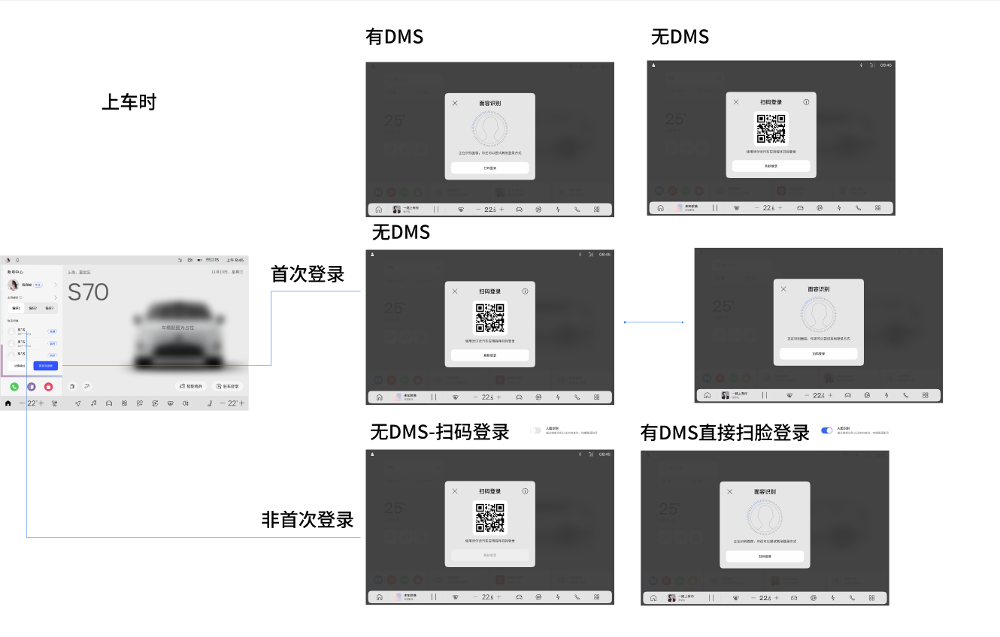
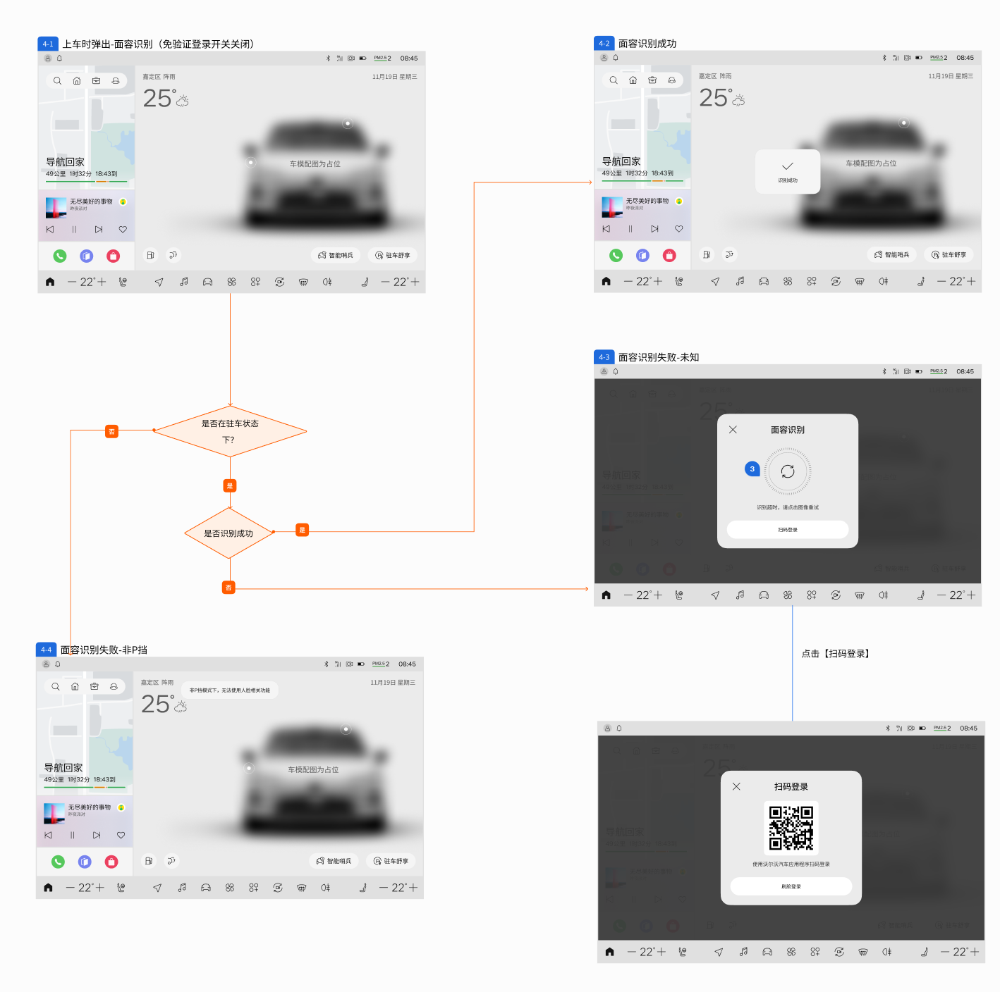
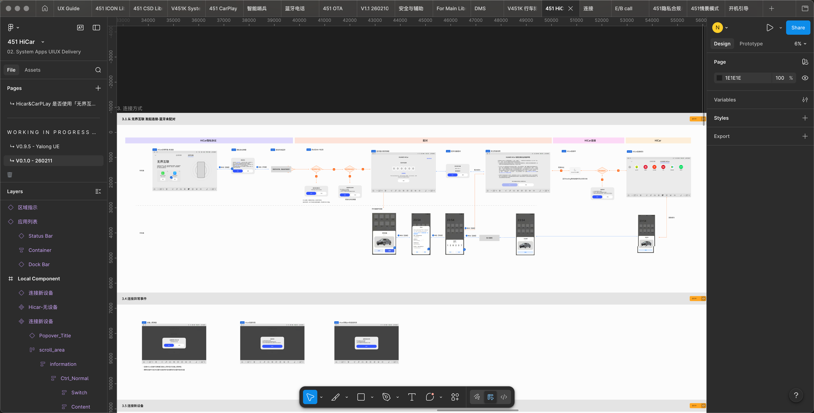
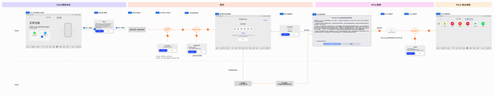
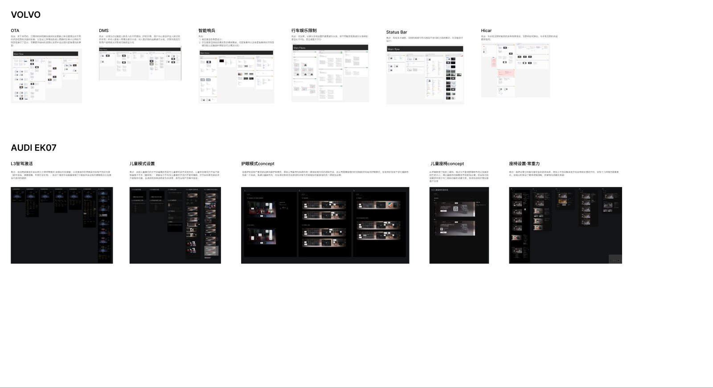

参与 Volvo 与 Audi 量产 HMI 项目，负责交互文档搭建、维护更新、流程校验与 UI 组件搭建。
UX Designer / Automotive HMI
白溢青HMI 交互设计师
关注量产车机交互文档、复杂流程梳理与可落地原型设计。擅长将分散需求转化为清晰的页面状态、交互逻辑和开发可理解的交付文档。
Experience Snapshot
2024 - 2026
负责用户痛点调研、市场分析与高保真网页原型开发，曾完成 AI 简历优化功能的 10+ 页面交互原型。
关注人因工程、汽车用户研究与跨文化用户行为分析；UCB Summer Session 数媒设计学习经历。
Figma
Sketch
Codex
AE
PS
中文母语
英文工作语言
Production
量产 HMI 交互文档
Logic
复杂流程与状态拆解
Prototype
高保真原型与 concept
Audi EK07
量产维护与概念探索
01 / Overview
项目背景与我的角色
项目背景
在 Volvo 量产 HMI 项目中，团队基于客户提供的 446 车型界面进行页面搭建，并逐步扩展到与 446 功能存在较大差异的新车型界面。随着交付日期和需求输入方式变化，项目对方案完整性、文档准确性和交付风险控制提出了更高要求。
我参与了多个车机功能模块的交互文档搭建与维护，将需求、页面框架和设计规范转化为可供客户确认、开发理解和测试验证的量产交互文档。
Responsibility
需求差异梳理
Responsibility
交互流程搭建
Responsibility
页面组件搭建
Responsibility
交付风险检查
02 / Method
我的方法：先搭框架，再处理细节。
面对需求表格、客户反馈和已有方案修改，我会先理解旧方案，再判断本次变更对整体流程的影响。
对比需求
将需求表格、旧版本方案和现有页面进行对比，标记新增、修改和沿用内容。
拆分流程
按用户路径、系统状态、异常情况和特殊模式拆分流程，先建立整体框架。
补全状态
检查每个关键节点是否有入口、反馈、失败兜底和退出路径。
沟通确认
对不明确的逻辑与对接设计师或客户反复确认，保证最终文档可开发。
01
OTA / Complex Flow Building
OTA
从需求表格到完整更新流程
核心挑战
OTA 功能的输入不是完整 PRD，而是客户提供的需求表格和页面框架。由于需求信息较分散，我需要先找到本次更新与旧版本之间的差异，再搭建完整流程，逐步确认页面状态和操作规则。
2 周交付周期
23关键页面
7核心流程
问题定义
如何在需求输入不完整的情况下，快速识别 OTA 功能变更点，并将多流程、多状态的更新逻辑整理成清晰、可执行的量产交互文档？
用于放置完整流程缩略图，展示从发现新版本到更新完成 / 失败的主链路。
用于放置预约时间、夜间自动更新冲突逻辑相关界面截图。
拆成 7 条可开发流程
- 当前版本 / 有新版本 / 无网络等基础状态
- 安装包下载中与下载完成
- 预约更新与修改预约时间
- 夜间自动更新与预约时间冲突逻辑
- 立即更新与倒计时更新
- 更新检测、更新成功 / 失败
- 售前模式、一键 OTA 等特殊场景
发现新版本下载完成预约 / 立即更新
更新前检测更新中成功 / 失败
售前模式一键 OTA严重异常
Key Decision
用户预约时间优先于夜间自动更新
当用户未预约更新时，夜间自动更新可以在系统判断合适的夜间空闲时间段执行；当用户已经主动预约更新时间后，系统应优先尊重用户选择。
未预约
夜间自动更新可生效
已预约
按用户预约时间执行
02
DMS / Flow Issue Identification
DMS
识别登录流程中的状态漏洞
按登录类型分类，但缺少状态判断

按用户上车后的真实路径补全判断

我识别到的问题
- 缺少车辆是否处于 P 挡的判断。
- 缺少面容识别成功 / 失败后的完整分支。
- 识别失败后没有清晰的兜底路径。
- 面容识别和扫码登录之间的跳转关系不够明确。
最终流程
上车触发面容识别 → 判断是否处于 P 挡 → 判断是否识别成功 → 成功登录 / 失败重试 / 扫码登录兜底
03
HiCar / Flow Simplification
HiCar
通过沟通简化车手互联流程
流程节点分散，主路径不够突出

收敛为四阶段主流程

Communication Outcome
从跨端复杂链路，收敛为清晰四阶段
我通过与对接设计师多次沟通，重新确认每个节点是否必要、是否可以合并、是否需要单独保留，最终让文档主路径更清晰。
HiCar 隐私协议
配对
HiCar 连接
融合桌面
04 / Summary
三个模块，呈现三类量产交互能力。
复杂流程搭建
在需求输入不完整的情况下，通过新旧方案对比，完成 23 个关键页面和 7 条核心流程交付。
流程问题识别
在已有流程中发现状态漏洞，补充 P 挡判断、识别结果分支和扫码兜底路径。
流程简化推动
通过多轮沟通，将跨端连接流程收敛为更清晰的四阶段主路径。
通过 OTA、DMS 和 HiCar 三个模块，我逐渐建立了量产 HMI 交互文档的工作方法：先理解业务和旧方案，再拆解流程、补全状态，并通过沟通确认让方案真正可落地。
04
AUDI EK07 / Secondary Case
Audi EK07
量产文档维护、复杂状态梳理与 concept 方案设计
项目定位
在 Audi EK07 项目中，我主要负责已有量产 HMI 交互文档的维护更新，并参与部分界面 concept 方案探索。相比 Volvo 的从 0 到 1 文档搭建，这部分更强调对既有系统逻辑的理解、版本一致性校验和复杂条件下的状态覆盖。
Capture Placeholder
L3 智驾激活
用流程图 / 状态矩阵占位，展示几十种特殊情况、激活中状态、失败原因与弹窗提醒。
01 / Complex State
L3 智驾激活
自动驾驶激活中会出现几十种特殊情况，我重点梳理了对应弹窗、界面元素变化和失败原因。
Capture Placeholder
儿童模式设置
用规则示意图占位，突出子开关与总开关的联动逻辑，以及编辑态与置灰锁定态。
02 / Rule Update
儿童模式设置
重新整理子开关与总开关的编辑关系，让打开前可编辑、打开后置灰锁定的规则更符合直觉。
Capture Placeholder
护眼模式 concept
用分屏布局示意占位，突出前后排控制入口、滑动条和按钮轮切的重排方式。
03 / Concept Layout
护眼模式 concept
在有限空间内重新组织前后排控制入口，通过布局、滑动条和按钮轮切承接新增功能。
Capture Placeholder
儿童座椅 concept
用信息层级占位，表现新增购买二维码和说明文案补充后，入口更容易理解。
04 / Information Design
儿童座椅 concept
在插图与控件限制下补充购买二维码和说明文案，提升入口可理解性。
Capture Placeholder
座椅设置 · 零重力
用长图占位，展示四座 / 五座、前排 / 后排与不同触发条件下的多状态反馈矩阵。
05 / Scenario Matrix
座椅设置 · 零重力
按四座 / 五座、前排 / 后排与不同触发条件整理多种反馈情况，保证关键提醒不遗漏。
复杂状态覆盖
在 L3 智驾和零重力座椅中，重点处理多触发条件、多失败原因和多反馈状态。
既有逻辑维护
基于已有系统规则做文档更新，保持页面状态、关联界面和版本逻辑一致。
概念方案表达
在护眼模式和儿童座椅中，将新增需求转化为可沟通、可迭代的界面方案。
Supplement
内容补充：其他项目与模块经历
除本案例重点展开的 OTA、DMS 和 HiCar 外，我也参与了 Volvo 与 Audi EK07 中的其他功能模块交付，作为整体项目经验补充。
